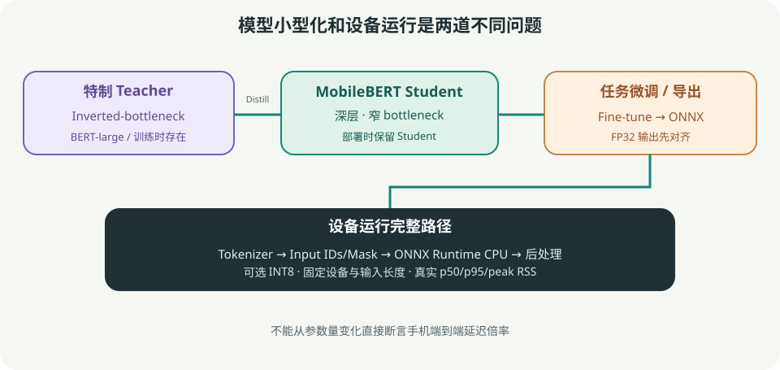

1. 移动端系统不是只测一个前向速度
一个用于离线中文意图分类的模型，通常需要从用户输入、分词、token ID、padding、Encoder、任务头一路运行到结果。如果需求是“中档手机上 120 ms 内得到答案”，那么要约束的是端到端 p95，而不是只跑一次 GPU forward。CPU 型号、线程数、缓存热度、内存压力、输入长度和 tokenizer 实现都影响实际延迟。
小模型还有冷启动成本：加载模型权重、初始化 runtime、首次 kernel 编译或内存分配可能与热路径相差很大。应用包体大小不同于运行中 RSS；静态权重常驻、动态激活和 tokenizer 词表都有自己的存储成本。想要“能在手机上跑”，必须明确预算与评估设备。
2. MobileBERT 的真正设计：深而窄的瓶颈 Transformer
MobileBERT（Sun et al., ACL 2020）并不只是 BERT-base 的截层版本。它追求更窄的隐藏表示，但保留一定深度，通过专门的 bottleneck block 让较低维表示用于昂贵的 attention/FFN 计算，同时尽量保留表示能力。作者也重新平衡 attention 与 FFN 的计算结构。
教师模型不直接是任意 BERT-large checkpoint：原论文先训练了专门加入 inverted-bottleneck 的 BERT-large 教师，再通过知识迁移训练 student MobileBERT。这样 teacher 与 student 的内部结构更易于相互对齐。如果换成标准 BERT-large 教师，也许可以训练，但已不是论文的完全相同实验配置。
“inverted bottleneck”在教师与“bottleneck”在学生中的用途不同，不能只把两个模型的层宽画成统一越来越细的漏斗。最终部署一般保留学生 Encoder 与下游任务 head，不把大教师和 distillation heads 一起打包。
3. 从宽度与长度推导核心计算变化
若输入 states 为 [B,T,H]，普通注意力的 Q/K/V 与 FFN 权重运算中，除 attention score 的 T²d 项外，还存在多项与 T×H² 成比例的线性投影/FFN 计算。瓶颈将部分内部运算的维度降为 b（b<H），可使对应投影成本降低；但总 FLOPs 仍包含残差映射、额外 bottleneck 层、head 数、序列长度与 kernel 效率。
这里是一个 Transformer 操作的尺度解释，并不是 MobileBERT 原论文的准确 FLOPs 计算式：多头数、各层不同宽度和数次额外投影都被省略。不能由 H 缩半就说整体延迟必然变为四分之一。
4. 从训练权重到端侧产物的五道门

第一道门：选定任务与 checkpoint，固定 tokenizer 文件、词表、special IDs、最大 token 长度。第二道门：在开发集上微调任务头，建立 FP32 baseline。第三道门：用明确 opset 将计算图导出 ONNX 并在 CPU Execution Provider 对照 logits。第四道门：选择可能的量化策略、校准数据与优化图。第五道门：在目标设备上进行真实端到端测量及错误分析。
导出后的 ONNX 图通常需要明确动态/静态 batch、动态 sequence axes、attention_mask 和 token_type_ids 是否存在。不要把所有 BERT-family 模型都假设有 token_type_ids；某些 checkpoint 或导出包装器会省略该字段。
5. INT8：量化的是数值表示，不是模型语义
量化把一些 FP32 浮点运算的权重/激活转换为更窄的整数表示。线性仿射量化通常定义 scale s>0 和 zero point z，使实数 x 映射到整数 q。数学上的量化后数值误差不可避免，因此模型结果可能变化；权重体积的“4 倍”只是纯权重位宽的理想比值，非整个文件或端到端延迟的严格保证。
ONNX Runtime 文档区分 quantize_dynamic（推理时估算 activation scale）与 quantize_static（用校准集预先统计）。对于 Transformer，官方文档通常建议先尝试动态量化，但硬件、opset、量化算子和精度要求可能改变决策。量化的算子覆盖度、是否 QDQ/QOperator、哪些算子回退为 FP32，都需要检查运行图，而非只读取文件名含 int8。
# 版本需与部署环境锁定；示意，不含模型导出步骤
from onnxruntime.quantization import quantize_dynamic, QuantType
quantize_dynamic("student.fp32.onnx", "student.int8.onnx",
weight_type=QuantType.QInt8)
# 下一步必须比较输出 logits、任务指标与设备上的 p95
6. 同一个任务怎么测 FP32、INT8 与新架构
建立输入长度分桶：例如真实语料的 P50/P90/P99 token 长度，分别测 batch=1 和实际应用 batch；固定手机型号/SoC/OS、runtime 版本、CPU 线程与是否启用 NNAPI/CoreML 等执行后端。每个输入先 warmup 若干次，再采集足够多的端到端样本，记录 p50、p95、均值与峰值 RSS，并将 tokenizer 时间单列。
只比较“权重 25 MB vs 100 MB”不足以证明量化对模型有帮助：如果 CPU 没有高效 INT8 matmul，或者输入太短导致转换开销占主导，延迟未必更优。评估混淆矩阵、少数类错误、confidence shift、校准、输出差异分位数。对多阶段系统还需把模型推理、后处理和结果展示的尾延迟一起计入。
7. ACL 2020 的速度与精度数字应该怎么引用
MobileBERT 论文摘要报告：与 BERT-base 相比，在论文的评估设置中约 4.3× 更小、5.5× 更快；Pixel 4 手机上的单次推理 latency 报告为 62 ms，GLUE score 为 77.7。它同时报告 SQuAD v1.1/v2.0 的 dev F1，然而这些指标与硬件数据属于不同的评价维度，不可混成“所有设备都能 62 ms 达到同样质量”。
比较时至少记录表格来源、教师/学生版本、序列长度、硬件和任务划分。论文的原始英文任务表现不能直接转换为中文 NER 或中文分类表现；需独立微调和做项目内验证。
8. 交互：改变优化步骤，哪些指标受到影响
切换部署计划。每个状态只说明成本影响路径，均不是运行中的手机性能实测。
部署选择与预期审计项
MobileBERT 学生：保留任务头与 tokenizer；移除 teacher/distillation 头。 核查参数、层数、峰值内存与实际 CPU FLOPs。 瓶颈结构不是 quantization，也不保证模型在任意 CPU 上同倍数加速。
9. 真实上线要防止的回归
语义回归：预训练 tokenizer 与下游模型不配套、导出图的 attention mask 语义反转、INT8 后少数类召回下降。系统回归：CPU 线程过度订阅、不同长度分布造成 p95 激增、冷启动耗时、应用内存压迫导致后台进程重启。隐私回归：即使离线端侧推理，也需要审查日志与模型输入是否上传。
上线应保留可回退的 FP32 或前一版本 artifact、权重 checksum、运行时版本、指标仪表盘与自动化例句回归集。压缩不是一次模型导出命令，而是持续的质量/成本共同治理。
关键结论
- MobileBERT 的教师是特制的 inverted-bottleneck BERT-large，学生通过深而窄的 bottleneck Transformer 和蒸馏训练，不是简单截层。
- ONNX 转换与 INT8 是独立工程阶段；要检查 FP32 输出一致性、算子支持、任务精度与设备延迟。
- 论文报告的 Pixel 4 延迟和压缩倍率属于指定配置；生产环境需完整测量 tokenizer + forward + 后处理的 p95。